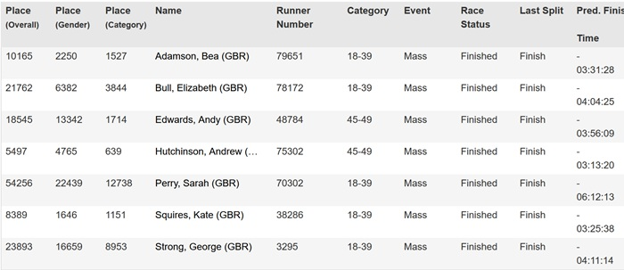
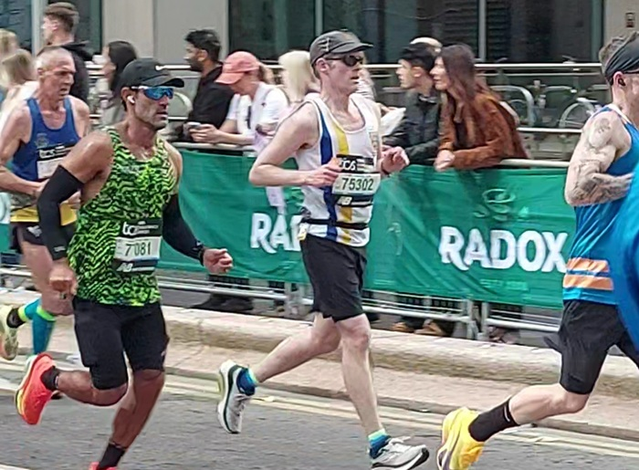

Seven SAC runners completed the TCS London Marathon on 26 April with splendid results as follows:

Full results are here.

26 April 2026
Seven SAC runners completed the TCS London Marathon on 26 April with splendid results as follows:

Full results are here.